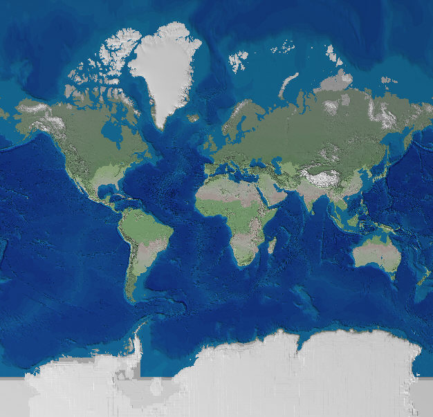

Projections
Map projections are a powerful and essential tool for GIS development. Geo-F/X has a complete library of support for map projections. This library is based on the USGS’ General Cartographic Transformation Package and the EPSG.
Supported projections include almost all common datums and ellipsoids as well as most common projections, including all NAD27 and NAD83 state plane projections and UTM projections.
The section below is small sample of some of the world projections supported. The image is based on the NGDC 5 minute DEM data of the world, rendered by a Geo-F/X algorithm and displayed using a variety of map projections. For a brief description of how these were produced, click here. To see a large version of the image, simply click on the thumbnails adjacent to the short description.
|  | The Mercator projection is familiar as it is very widely used. It is characterized by straight meridians and parallels that intersect at right angles. Scale is true at the equator or at two standard parallels equidistant from the equator. The projection is often used for marine navigation because all straight lines on the map are lines of constant azimuth |
| The Miller projection, like the Mercator, has straight meridians and parallels that meet at right angles, but straight lines are not of constant azimuth. Shapes and areas are distorted. Directions are true only along the equator, but the projection avoids the scale exaggerations of the Mercator projection. | |
| The Robinson projection is what is called a pseudo-projection because it is not purely geometric formulae, but is based on tables of coordinates. The projection has been designed to balance the distortion of shape, area, scale, and distance. | |
| The Mollweide projection, based on a secant azimuthal method is often used for world maps because it tends to retain the shapes of areas. Scale is true only along the standard parallels of 41 N and 41 S. | |
| Sinusoidal equal-area maps have straight parallels at right angles to a central meridian. Scale is true only on the central meridian and the parallels. Often used for regional projections in countries with a large north-south extent. | |
| This is a simple projection onto the WGS 84 spheroid, centered at 150 E longitude | |
| Another geographic projection onto the WGS 84 spheroid, this one centered at 110 W longitude | |

|
This projection onto the WGS spheroid, is looking down onto the abyssal plain of the Arctic Ocean. |
| A “selenographic” projection of the moon, derived from the topographic data from the Clementine mission |